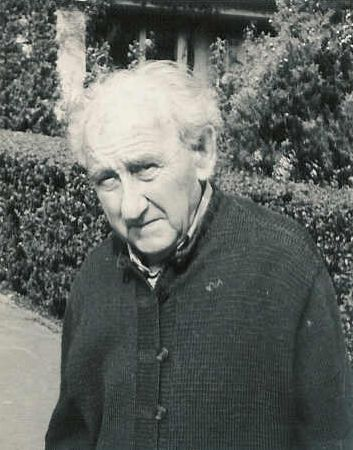
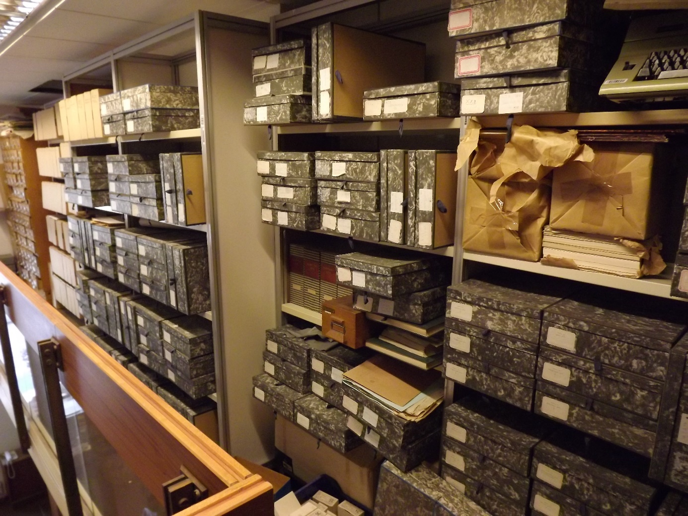
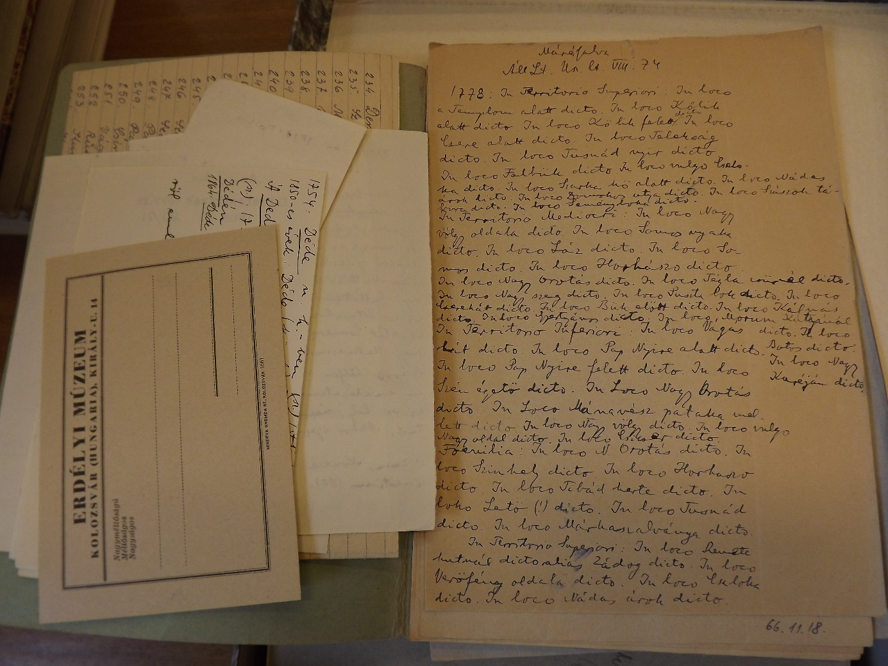

| Szabó T. Attila és munkássága | A helynévgyűjtemény kiadása | Az adattár elektronikus feldolgozása |
SZABÓ T. ATTILA a 20. századi magyar nyelvtudomány egyik legnagyobb hatású, iskolateremtő egyénisége, „egyszemélyes intézménye” volt. Életrajzát, főbb munkáit önálló könyvben BALASSA IVÁN tekintette át (BALASSA IVÁN: Szabó T. Attila (1906–1987). Erdély nagy nyelvtudósa. Budapest, 1996.). Születésének 100., majd 110. évfordulóján több emlékülésen, konferencián, folyóiratban méltatták több tudományterületre kiterjedő, alapvető műveit (PÉNTEK JÁNOS: Az iskolateremtő Szabó T. Attila. Magyar Nyelvjárások 44: (2006) 5–12.; BÁRTH M. JÁNOS (szerk.): Emlékkönyv Szabó T. Attila születésének 100. évfordulójára. Budapest, 2006; BENŐ ATTILA ‒ T. SZABÓ CSILLA (szerk.): Az ember és nyelv ‒ térben és időben. Kolozsvár, 2016). Bár nyelvészeti munkásságának nagyszabású vállalkozásai közül leginkább az Erdélyi Magyar Szótörténeti Tár vált ismertté a tudományos életben és a nagyközönség számára, írásaiból, interjúiból kiderül, hogy legkedvesebb szakterülete, szívügye a helynévkutatás volt. De korszakos jelentőségű írásait, amelyek között volt tudománytörténeti (a helynévkutatás 19. századi történetéről), programadó (a helynévgyűjtés jelentőségéről és módszeréről), adattári jellegű (Dés, Kalotaszeg, Borsavölgy történeti és jelenkori helynevei) és névelemző (a személynevek helyneveinkben) jellegű munka is, nem követhette az erdélyi történeti helynevek gyűjteménye, mert az évtizedeken át gyűjtött adattár kiadására az 1960-as, 70-es, 80-as években nem volt lehetősége. A cédulaanyag könyvbeli megjelenése csak 2001-ben indult és 2010-ben zárult le, valamivel megelőzve SZABÓ T. ATTILA egyedülálló szótári vállalkozásának, a Tárnak a befejezését.

Szabó T. Attila (1902‒1987)
A földrajzi nevek felé fordulásáról, a gyűjtés kezdeteiről, a hatalmas helynévanyag létrejöttéről Szabó T. Attila 1958-ban megjelent, tudományszervező céllal fogalmazott cikkében részletesen beszámolt (Szabó T. Attila: Az „Erdélyi helynévtörténeti adattár” és az erdélyi helynévkutatás néhány kérdése. Magyar Nyelv 54: (1958) 503–9.). Felidézte, hogy a helynevek gyűjtésének és közzétételének jelentőségét Kelemen Lajos munkáinak hatására ismerte föl. Eleinte szülőföldjének, Désnek és vidékének helyneveit igyekezett minél nagyobb alapossággal összegyűjteni a rendelkezésre álló levéltári forrásokból. A nagyszámú helynevet tartalmazó irattípusok – birtokösszeírások, határperek – megismerése után már Erdély legkülönbözőbb vidékeiről álltak rendelkezésére adatok, így felvázolódott előtte egy nagyszabású, egész Erdélyre kiterjedő történeti helynév-adattár ötlete.
Az évtizedek alatt összegyűlt cédulaanyag végül nem egységesen oszlott el: a legtöbb történeti helynév a közép-erdélyi megyékből: a hajdani Kolozs, Szolnok-Doboka, Torda-Aranyos és Maros-Torda vármegyékből, valamivel kevesebb a székelyföldről: Csík, Háromszék és Udvarhelyszék területéről, továbbá Alsó-Fehér, Szilágy, Kis- és Nagyküküllő vármegyéből került elő. A többihez képest elenyésző számban Erdély peremvidékéről: Beszterce-Naszód, Máramaros, Szatmár, Bihar, Hunyad, Szeben, Fogaras, Krassó-Szörény megyékből is gyűjtött névadatokat.

A gyűjtemény az Országos Széchényi Könyvtár kézirattárában
1958-as írásában Szabó T. Attila 650 000-re becsülte a névadatok számát. A cédulákat településenként rendezve 65 dobozban tárolta. Az 1980-as évek közepén adott interjújában már 700 000 történeti helynevet említett. Bár ennek a hatalmas anyagnak a kiadását élete folyamán évtizedeken át politikai okok nem tették lehetővé, az Erdélyi magyar szótörténeti tár szócikkei közé azonban helynévi adatokat is fölvett, ha azok egy-egy közszó története szempontjából fontos adalékkal szolgáltak, így a gyűjtemény egy része a Tár egyre gyarapodó köteteinek lapjairól már hozzáférhetővé vált a kutatók számára. Szándékairól így írt: „Nyilvánvaló, hogy az itt felvázolandó feladatok elvégzése csak közösségi munka keretében, az erre illetékes szervek megértő támogatásával és csak olyan távlati terv keretében történhetik meg, amelynek időtartama messze túl utal egy emberi élet szűkre szabott időbeli keretein” (Szabó T. 1958: 507).

Szabó T. Attila cédulái
Épp akkor vázolta fel a grandiózus helynévadattár szerkezetét, amelynek alapjául évtizedeken át gyűjtött cédulaanyaga szolgált volna, amikor szinte semmi esélye nem volt egy óriási kiadványsorozat megindítására. 1986-ban, halála előtt nem sokkal a kiadás előkészítésének tervét is összefoglalta. Bízott benne, hogy a folyamatos jelenkori gyűjtések is illeszkednek majd a történeti adatokat tartalmazó kötetekhez, és a létrejövő korpusz a magyar névtani vizsgálatok egyik reprezentatív, jól használható alapanyaga lesz.
Tervei közt az is szerepelt, hogy a vármegyénként, azon belül településenként rendezett helynévanyagot későbbi pótkötetekben egyéb történeti és jelenkori adatokkal egészítenék ki a kutatók (különösen Pesty Frigyes helynévgyűjteményéből). Távlati célként azt jelölte meg, hogy az efféle átfogó, sok adatot tartalmazó kiadványokat később követhetnék az egy-egy táj helyneveit vagy egy névtani jelenséget feldolgozó monografikus munkák, illetve hogy a nagyszámú helynév névföldrajzi térképlapok megrajzolását is lehetővé teszi a későbbiekben. Szerkesztési elképzelései tulajdonképpen megfeleltek az 1945 előtt kiadott, nagy jelentőségű munkái felépítésének, amelyekben a kalotaszegi, borsavölgyi falvak történeti, jelenkori névanyagát, a helységnevek történeti alakváltozatait, a helynevek térképes lokalizálását és a nevek mutatóit tette közzé.
Szabó T. Attila halála után Benkő Loránd közreműködésével a hatalmas cédulaanyagot tartalmazó dobozok kalandos úton az Országos Széchényi Könyvtárba kerültek. A gyűjtemény rendezéséhez, a kiadás előkészítéséhez Szabó T. Ádám fogott hozzá, de korai halála megakadályozta a munka befejezésében. A kiadás 1999-ben kapott új lendületet. Benkő Loránd támogatásával, Hajdú Mihály irányításával indult meg munka, melyhez pályázati források biztosítottak anyagi hátteret. A cédulák rendezését Janitsek Jenő kolozsvári névkutató vállalta magára, aki hajdani professzora, barátja kézírását is könnyedén olvasta, és az adatok lokalizálásához szükséges háttérismeretekkel is rendelkezett.
Szabó T. Attila helynévgyűjtésének 2001–2010 között lezajlott kiadása „csak” a hátrahagyott cédulaanyag közlését teljesítette, de így is példátlanul gazdag adatmennyiség vált elérhetővé több tudományterület kutatói számára. Elsősorban mikrotoponimák: szántók, kaszálók, erdők, dombok, völgyek, patakok, utak stb. neveit tartalmazza, és csak kisebb számban településneveket. A történeti, bár zömmel újkori helynévanyag jelentősége azért is kivételes, mert az erdélyi megyékből a történeti földrajz és a helynevek jeles kutatói kevesebb korai (13–16. századi) adatot tudtak közzétenni, mint az ország egyéb területeiről.
Az adatok legnagyobb része a 17–18. századból való, de szórványosan akadnak 15., 16. századi adatok is, ez utóbbiak főként az 1590-es évekből, a magyar nyelvű oklevelezés fölélénkülésének idejéből. Kisebb számban előfordulnak 19. és 20. századi adatok is. Az 1900-as évek első feléből származó szinkrón helynévgyűjtéseket, amelyeket Szabó T. Attila tanítványaival készített, készíttetett, és gondosan megőrzött történeti helynév-cédulái között, a sorozat közzétevői elég értékesnek és pótolhatatlannak ítélték meg ahhoz, hogy a történeti neveket kiegészítve belekerülhessenek a kötetekbe – valószínűleg Szabó T. Attila szándékának megfelelően.
A gyűjtemény kiadása Szabó T. Attila szándékainak megfelelően megyénként kötetekbe rendezve (az 1913-as közigazgatási határokat figyelembe véve) történt. A kiadványsorozat szerkesztésmódja alapvetően azoknak a kiadványoknak a mintáját követte, amelyeket még Szabó T. Attila rendezett sajtó alá. A kötetekben a települések betűrendben követik egymást, a hozzájuk kapcsolódó helynévanyag időrendben áll. Az egyszerűbb azonosítás érdekében a közzétevők a helységnevek román – s ha van, német – nevét is közölték. A történeti helynevek nem önállóan, hanem a kijegyzetelt szövegkörnyezetben, gyakran ragozott formában szerepelnek az anyagban. A nevek döntő része a magyar névrendszerhez tartozik, de nagy számú román adat is előfordul közöttük, így vizsgálatukkal alkalom nyílik román-magyar nyelvi kontaktusok feltárására is.
A Szabó T. Attila céduláin található betűhív adatok öt évszázad erdélyi írásbeliségének a változatosságát is tükrözik. A közzétevőknek meg kellett küzdeniük számtalan különleges karakter kiolvasásával és nyomtatott megjelenítésével, hogy ez a sokszínűség is vizsgálhatóvá váljon a kutatás számára. Mivel nem kiadásra előkészített, szerkesztett kéziratról, hanem különböző módokon feljegyzett adatokról van szó, egységesíteni kellett a központozás, a betűváltozatok, forrásjelzések, megjegyzések stb. szerkesztésmódját is. A gyűjtemény nem csupán adatközlés: Szabó T. Attila sok zárójeles, olykor felkiáltójellel kísért kommentárja is bekerült a kötetekbe, hiszen ezek ráirányítják a figyelmet és magyarázatot is adnak a helynevekben felbukkanó számtalan különleges jelenségre.
Egy efféle kiadvány feladata lenne a helynevek pontos vagy hozzávetőleges lokalizálása is. A gyűjtemény hatalmas mérete ebben az esetben ezt nem tette lehetővé, egy-egy helység névanyagának tüzetes fölgyűjtése közben kell az ezt a kiadványt is fölhasználó kutatóknak megoldaniuk a nevek helyhez kötésének problémáját. A kötetek csak tájékozódást segítő áttekintő megyetérképet tartalmaznak, amelyeken a szerkesztők feltüntették a területen található főbb helységek neveit.
A gyűjtemény az eltűnt, más településekbe olvadt, pusztává lett helységek helyneveit is tartalmazza, ezért sokszor az adatok település szerinti beosztása nem volt egyszerű feladat. Természetesen a számtalan külterületi helynév között is megbújhat valamely elpusztult helység neve. Az adatok kronologikus rendezése látványosan mutatja egy település helynévrendszerének változásait az idők során, sorról sorra követhetjük egy-egy név kisebb hangtani, morfológiai változásait, egyes névelemek eltűnését, a név kiegészülését, nevek eltűnését vagy új nevek keletkezését. A gyűjtemény számos információval szolgál egy-egy helynévről: legtöbbször megadja a szövegkörnyezetet, a hely fajtáját, hasznosítását (szántó, legelő, erdő stb.), olykor olvasati kérdéseket tisztáz, többször ismeretlen szavakról zárójelben közli a lehetséges eredetet (földrajzi köznevek, személynevet).
A településnevek különös jelentősége miatt javasolta Szabó T. Attila, hogy a történeti helységnévadatokat különválasztva, a más forrásokban megjelent nevekkel kiegészítve közöljék a szerkesztők. Az egy forrásból származó adatok ezért mindig a helységnévváltozattal kezdődnek, ezt követik az egyéb helynevek. Településnév-tipológiai és változásvizsgálatokhoz is bőséges forrást biztosít a gyűjtemény, bár a legkorábbi adatok nem minden esetben kerültek be a gyűjtés körébe.
Szabó T. Attila kéziratos cédulái tartalmazták – rövidítésekkel jelölve – az adatok forrását, melyek a kötetekbe változtatás nélkül kerültek be. Ezek azonban a romániai közgyűjtemények átszervezéseinek következtében már csak nagy nehézségek árán vezethetnének vissza az eredeti forrásanyaghoz. Bizonyos okleveles emlékek el is pusztulhattak a lejegyzés óta eltelt közel fél évszázad során, ezért az OSZK-ban őrzött kéziratos gyűjtemény pótolhatatlan, olykor az eredetivel egyenértékű.
2001 és 2010 között megjelent Alsófehér, Háromszék, Szilágy, Torda-Aranyos, Kis- és Nagyküküllő, Udvarhelyszék, Maros-Torda, Csík-Gyergyó-Kászon, Szolnok-Doboka, Kolozs megye és a peremvidékek történeti helynévanyaga tizenöt kötetben. A 2010-ben elkészült Kolozs megyei kötet a legnagyobb terjedelmű, legtöbb helynevet tartalmazó része a sorozatnak. Belekerült az egykori borsavölgyi, kalotaszegi kötetekbe tartozó települések helynévanyaga is, mert a kéziratos cédulák szerkesztése közben kiderült, hogy Szabó T. Attila az 1940-es években kiadott gyűjtemények adattömegét nem tekintette lezártnak, még évtizedeken keresztül kijegyzett kalotaszegi, borsavölgyi helyneveket is a forrásokból.
Szabó T. Attila erdélyi történeti helynévgyűjtésének kiadási munkálatai közben már a kezdetektől jogos igényként merült föl, hogy mutató is segítse a kötetben való eligazodást, hiszen a településenként rendezett adatok csak korlátozott felhasználást, elsősorban történettudományi hasznosítást tesznek lehetővé. Maga Szabó T. Attila is megfogalmazta, hogy nyelvészeti kutatás számára valamiféle szótárszerű feldolgozás lenne a legmegfelelőbb (Szabó T. 1958: 508). Egy efféle mutató viszont a kiadás időtartamát és a terjedelmet is többszörösére növelte volna. Mindemellett a nevek szövegrészletekben való elkülönítésének elméleti problémája is késleltette a mutató létrejöttét.
Már kiadási munkálatok közben nyilvánvalóvá vált, hogy ezt a problémát az elektronikus közzététel oldhatja meg. Bár a kötetek nyomdai előkészítése már számítógépes formában történt, tehát a szerkesztők rendelkezésére állt egy elektronikus változat, a digitalizálás számos buktatót rejtett. Egyrészt, mivel a források óriási számban tartalmaztak különleges, mellékjeles karaktereket, olyan egységes karakterkódolást kellett létrehozni, amely minden betűt tartalmaz, és a keresés lehetőségeit sem szűkíti (egy példával élve: a mező keresésekor megjelenik a mezō és a mezŏ is). Másrészt ‒ a klasszikus névtárak példáját követve ‒ a névtani vizsgálatokhoz szükségesnek látszott a nevek elhatárolása, vagyis a ragos, körülírásos, szövegkörnyezettel közölt adatokból a „valódi”, „tőhelynevek” kiszűrése, kivágása. Harmadrészt a helynevek lokalizáló jelentésmozzanatából kiindulva, de némileg a számítógépes dialektológia rohamos fejlődését látva, fontos követelménynek tűnt az adatok térképes ábrázolásának megteremtése is.
Ezen célok jegyében 2006 és 2011 között (NKFP és OTKA támogatással) a Geolingvisztikai Műhely (geolingua.elte.hu) keretein belül, Vékás Domokos és Vargha Fruzsina Sára „Olló” névre keresztelt szoftverével alakítottunk ki egy olyan adatbázist, amely lehetővé tette a helynevek közti keresést, és az adatok térképre vetítését is. Névtani ‒ elsősorban névföldrajzi ‒ hasznosíthatóságáról, tanulságairól számos tanulmány született, ezek a Publikációk menüpont alatt megtalálhatók.
Nagyívű eredményeinek ellenére sajnálatos módon ‒ a pályázati források elapadásával ‒ ez az elektronikus feldolgozás csak az „offline” működésig jutott el, az internetes közzététel éveken át csak a tudományos tanulságok (pl. névtani jelenségtérképek) közlését jelenthette. Mindeközben a szédítően gyors tempójú informatikai (és webes) fejlődés az online publikálás alapkérdéseinek újragondolását vetette föl, és egy 2016-os NKA-pályázat segítségével megteremtődtek a feltételei egy korszerű névadatbázis felépítésének.
Az eredeti szövegfájlokhoz visszanyúlva egységesítettük a karaktereket anélkül, hogy a betűhívség igénye sérült volna (példák a mellékjelezés sokszínűségére: ȧ a̋ ă ḁ a̯ a̭ ȧ͕́ ć ḍ ë ȅ e̋ ė ē éͅ eͅ e͔ ḙ e̊ ë̮ è̬ e̮ ḙ́ ḙ̈ ḙ̀ ĕ̩ ǵ ḡ i̥ ī ĭ i̯ i̮ j̆ ḿ m̄ n̄ p̄ ȯ o̰ ò o̜ ō oͤ ö́ o̯ ò̯ o̭ ò̬ ō̬ ó̬ ȏ s̄ s̑ ſ t̄ ṭ t̕ T́ u̇ ū uͤ ǘ u̯ u̮ ǘ ü̯ v̄ v́ v̇ V́ ẃ w̋ ẅ ȳӯӱӳẏýy͂y̆ ź zͅ ʒ). Célunk az volt, hogy az Unicode szabvány használatával minden felületen megjeleníthetőek legyenek az adatok, de az online keresés lehetőségei se szűküljenek.
Kialakítottuk az új adatbázis mezőszerkezetét, és az eredeti szövegfájlok írásjelhasználatának egységességét kihasználva némileg automatizáltan létrehoztuk a megye-település-év-forrás-adat-helyfajta attribútumokat tartalmazó rekordokat. Ehhez hozzárendeltük manuálisan a kb. 2000 település koordinátáit internetes adatbázisokból, és ahol lehetett, meghatároztuk az eltűnt/egybeolvadt helységek fekvését is. Kiegészítettük az adatbázist a településnevek különféle változataival és nem magyar nyelvű formáival is. A létrejött, mintegy 350 000 sort tartalmazó adatbázis „adat” mezőjéből nem „vágtuk ki” a helyneveket, így ezek inkább helymeghatározásoknak, körülírásoknak tekinthetők, amelyek sokszor több helynevet is tartalmaznak. Egy-egy adat tehát egy-egy helymeghatározás az eredeti oklevél (birtokösszeírás stb.) nyelvi formáit követve. Nem készült tehát tulajdonképpeni lista alanyesetű „tőhelynevekről”, viszont bármilyen betűkapcsolat, szó, név, névszerkezet kinyerhető a kereső segítségével, kronológiai, települési, típus-jellemzőivel és szövegkörnyezetével együtt. A koordináták segítségével pedig olyan térképet hozhatunk létre, amely a keresett nyelvi formák előfordulási helyét mutatja. Hangsúlyoznunk kell, hogy nem az adott helynév pontos helyét, hiszen az történeti adatok esetében precíz mikrokutatásokat igényelne, és úgy sem lenne feltétlenül sikeres. Annak a névrendszernek (falunak, településnek) a helyét, amelyben az adott szó, név, névrész előfordul. A térképi megjelenítéshez a legegyszerűbben használható, konvertálható, népszerű Google Térkép alkalmazást választottuk (számtalan kartográfiai előnyén túl azért is, mert az erdélyi helyneveket magyarul közli, segítve az eligazodást). A kapott térképek reményeink szerint a nyelvföldrajzi térképekhez hasonlóan számos érdekesebbnél érdekesebb nyelvi regionális megoszlást mutatnak meg a történeti névadatokon keresztül.